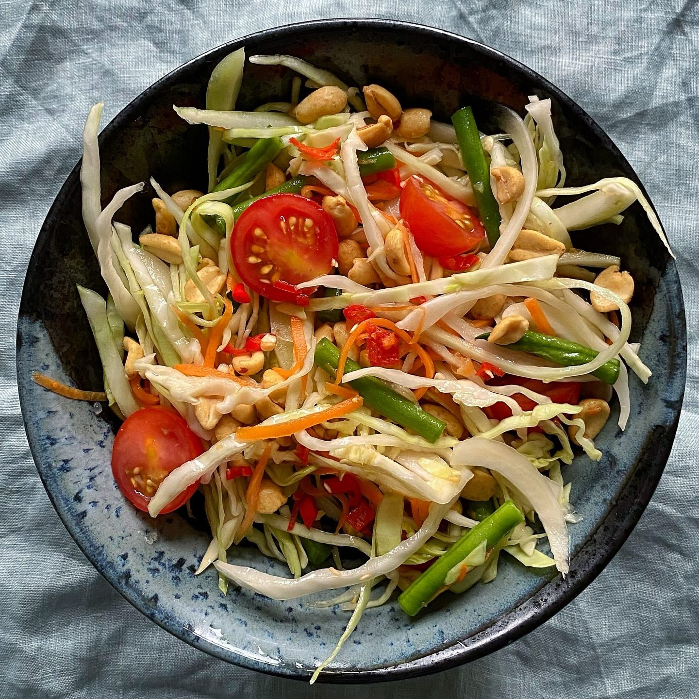

Som Tam

Description
This papaya salad is light and refreshing. I can easily eat a giant bowl of it and be completely satisfied. And as an extra
bonus, this salad is pretty healthy. I sometimes add extra chiles because I enjoy a lot of heat. That's what is great about
this recipe, it is easily customized to suit individual tastes.
Ingredients
- ¼ cup peanuts
- 2 Thai chiles, chopped
- 3 cloves garlic
- 1 tablespoon dried shrimp
- 1 tablespoon white sugar
- 2 medium limes, juiced
- 2 tablespoons fish sauce
- 1 medium papaya - peeled, seeded, and sliced
- 1 cup cherry tomatoes, halved
- ¼ cup fresh green beans, cut into 1-inch pieces
- ½ medium carrot, peeled and shredded
- salt and ground black pepper to taste
Steps
- Preheat the oven to 350 degrees F (175 degrees C). Place peanuts on a baking sheet.
- Toast in the preheated oven until fragrant and browned, 7 to 8 minutes. Let cool for 5 minutes.
- Grind roasted peanuts, Thai chilies, garlic, dried shrimp, and sugar in a mortar and pestle or food processor.
Stir in lime juice and fish sauce to make dressing.
- Toss papaya, tomatoes, green beans, and carrot with dressing. Season with salt and pepper.